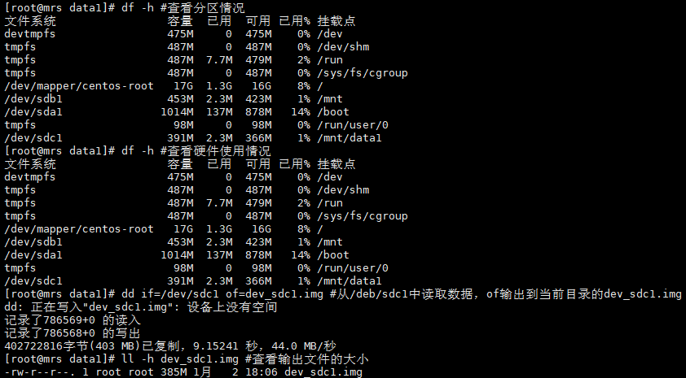

Linux 磁盘与文件系统管理
文档目录：
一、fdisk：磁盘分区工具
二、partprobe：更新内核的硬盘分区表信息
三、tune2fs：调整ext2/ext3/ext4文件系统参数
四、parted：磁盘分区工具
五、mkfs：创建Liunx文件系统
六、dumpe2fs：导出ext2/ext3/ext4文件系统信息
七、resize2fs：调整ext2/ext3/ext4文件系统大小
八、fsck：检查并修复Liunx文件系统
九、dd：转换或复制文件
十、mount：挂载文件系统
十一、umount：卸载文件系统
十二、df：报告文件系统磁盘空间的使用情况
十三、mkswap：创建交换分区
十四、swapon：激活交换分区
十五、swapoff：关闭交换分区
十六、sync：刷新文件系统缓冲区
一、fdisk：磁盘分区工具(仅可分区小于2T的磁盘)
1、fdisk -l #显示磁盘分区列表
2、fdisk -l /dev/sda #查看指定分区的信息
3、fdisk /dev/sdb #交互式分区
4、mkfs.ext4 /dev/sdb1 #格式化磁盘，格式化后才能挂载到系统使用

5、mount /dev/sdb1 /mnt/ #mount挂载磁盘
更正：上述语句中参数为defaults
注意事项：fdisk中d操作为删除分区，谨慎操作，q可退出，w会报错所有设置
二、partprobe：更新内核的硬盘分区表信息
partprobe /dev/sdb #不重启情况下，更新内核中硬盘分区
三、tune2fs：调整ext2/ext3/ext4文件系统参数
1、tune2fs -l /dev/sdb1|grep -i Mount #查看sdb1设备的挂载次数
2、tune2fs -C 30 /dev/sdb1 #设置挂载次数
3、tune2fs -c 40 /dev/sdb1 #设置强制自检的挂载次数
4、tune2fs -i 10 /dev/sdb1 #设置每10天检查一次
四、parted：磁盘分区工具（大于2T）
1、parted #交互模式 ，h帮助，quit退出
2、parted -l #显示所有磁盘分区情况
3、parted /dev/sdb #使用parted进行分区
parted /dev/sdb #使用parted进行分区
reboot后查看分区情况df -h
五、mkfs：创建Liunx文件系统
1、ls /sbin/mkfs* #下面所列是各种创建不同文件系统的命令
2、mkfs -t ext4 -v /dev/sdc #-t指定文件系统类型 -v详细过程
3、mkfs.ext4 /dev/sdc #通过mkfs.ext4创建文件系统（简洁写法，效果同上）
六、dumpe2fs：导出ext2/ext3/ext4文件系统信息
1、dumpe2fs /dev/sdc|egrep -i ‘incode size|incode count’ #查看系统的incode信息（暂无）
2、df -i #查看系统incode使用情况
3、dumpe2fs /dev/sdb1|egrep -i “block size|block count” #查看block信息
七、resize2fs：调整ext2/ext3/ext4文件系统大小
背景：将两个磁盘200M的分区sdc1，sdc2合并成一个分区，如下为分区信息、挂载信息、相应文件
卸载已挂载的磁盘
删除分区，重新分区，起始和结束的柱面需要同上次分区一致
resize2fs /dev/sdc1 #在线调整磁盘大小
查看文件原sdc1中文件存在，原sdc2中内容丢失
八、fsck：检查并修复Liunx文件系统（文件系统必须是卸载状态）
1、开机正常工作的情况下请勿使用fsck来检查磁盘，会可能导致正常的磁盘发生故障
2、/etc/fstab中最后一列数字为1或2时，党系统开机时会读取fsck对这些系统磁盘进行自检
3、已挂载的文件系统上执行fsck等磁盘修复命令，可能导致故障
九、dd：转换或复制文件
1、dd if=/dev/sdc1 of=dev_sdc1.img #从/deb/sdc1中读取数据，of输出到当前目录的dev_sdc1.img(复制/备份文件)

2、dd if=/dev/zero of=/dev/sdc1 #/dev/zero是一个特殊的设备，相当于什么都没有，从/dev/zero读取数据，覆盖/dev/sdc1的数据（删除分区数据）
3、dd if=dev_sdc1.img of=/dev/sdc1 #使用备份恢复被删除分区数据
4、dd if=/dev/zero of=test.data bs=1M count=2 #从zero读取数据写入test.data，生成test.data文件为bscount=1M2=2M（生成测试文件）
5、dd if=test.txt conv=ucase of=test.txt_U #利用conv参数设置ucase将小写转化为大写
十、mount：挂载文件系统
1、mount #显示系统已挂载信息（等同于mount -l）
2、mount /dev/cdrom /mnt/ #对系统光驱进行挂载，没有指定-t iso9660，但是系统自动识别
3、mount -o remount,rw / #remount尝试重新挂载跟’/‘为rw读写，当系统只读故障时，-0 使用性能及安全挂载
4、mount -a #读取/etc/fstab机型挂载测试，如果能挂载成功，重启一般也正常
十一、umount：卸载文件系统
1、umount /mnt #卸载已挂载的光盘

2、umount -lf /mnt/ #强制卸载
十二、df：报告文件系统磁盘空间的使用情况
1、df #显示所有磁盘的使用情况
2、df /boot/ #查看具体分区所挂在的磁盘上情况
3、df -h #容量使用 k/M/G人类可读的显示方式
4、df -ih #-i查看inode的使用情况
5、df -t ext4 #显示指定类型的磁盘

6、df -T #-T显示文件系统的类型
十三、mkswap：创建交换分区
1、mkswap /dev/sdc #默认是不可以使用整块磁盘做交换分区
2、mkswap -f /dev/sdc #使用-f强制使用整块磁盘做交换分区
后续操作见命令swapon
十四、swapon：激活交换分区
1、swapon /dev/sdc #激活swap分区
2、swapon -s #查看交换分区
十五、swapoff：关闭交换分区、
1、swapoff /dev/sdc #关闭/dev/sdc的交换分区
2、swapoff -a #关闭所有交换分区
十六、sync：刷新文件系统缓冲区
手工执行sync可以将内存中的文件缓冲至磁盘中
本博客所有文章除特别声明外，均采用 CC BY-SA 4.0 协议 ，转载请注明出处！